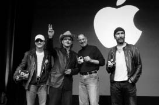

Müzik Adamı
Hayatının Fon Müziği

Jimmy Iovine, Bono, Jobs, ve The Edge, 2004
iPod’unda
iPod fenomeni büyüdükçe başkan adaylarına, az çok ünlü kişilere, yeni sevgililere, İngiltere Kraliçesi’ne ve beyaz kulaklık takan başka hemen herkese aynı sorunun sorulmasına yol açtı: “iPod’unda neler var?” Elisabeth Bumiller 2005’in başında New York Times’ta yayınlanan bir yazısında, bu soruyu sorduğu Başkan George W. Bush’un verdiği yanıtı inceledi. “Bush’un iPod’u klasik country şarkıcılarıyla dolu,” diye bildirdi. “Van Morrison’dan şarkılar var (“Brown Eyed Girl” Bush’un favori şarkılarından biri), bir de John Fogerty’den ‘Centerfield’ var elbette.” Rolling Stone editörü Joe Levy’ye bu seçkiyi analiz ettirdi; Levy “Başkanın kendisini sevmeyen sanatçıları sevmesi ilginç,” yorumunda bulundu.
“iPod’unuzu bir arkadaşınıza, yeni çıkmaya başladığınız birine veya uçakta yanınızda oturan yabancıya vermek kendinizi ele vermenize yol açar,” diye yazdı Steven Levy The Perfect Thing (Kusursuz Şey) adlı kitabında. “İnsanların tek yapması gereken o dokunmatik tekeri kullanarak kütüphanenizde gezinmek; müzikal açıdan çırılçıplaksınız. Orada sadece neyi sevdiğiniz değil – kim olduğunuz sergileniyor.” Dolayısıyla bir gün, Jobs’la birlikte oturma odasında oturup müzik dinlerken, iPod’unu görmek istediğimi söyledim. Jobs bana 2004’te şarkı yüklediği iPod’unu gösterdi.
İçinde Dylan’ın korsan konser kaydı serisinin altı albümünün de bulunması şaşırtıcı değil ve parçalardan bazıları Jobs’ın serinin resmi olarak yayınlanmasından yıllar önce Wozniak’la birlikte iki makaralı teyplerden dinleyip tapmaya başladığı şarkılar. Dylan’ın on beş albümü daha var, ilk albümü Bob Dylan’dan (1962) başlayarak, ama Oh Mercy’den (1989) sonrası yok. Jobs Dylan’ın daha sonraki albümlerinin –aslında Blood on the Tracks’ten (1975) sonraki tüm albümlerinin– eski performansları kadar iyi olmadığını savunarak Andy Hertzfeld’le ve başkalarıyla epey tartışmıştı. Sadece Dylan’ın 2000 senesinde gösterime giren Wonder Boys (Harika Çocuklar) filminde kullanılan şarkısı “Things Have Changed”i istisna tutmuştu. Apple’dan kovulduğu haftanın sonunda Hertzfeld’in getirdiği Empire Burlesque (1985) albümünün iPod’unda yer almamasıysa dikkat çekici.
iPod’unda The Beatles’a da epey yer vermişti. Yedi albümünden şarkılar koymuştu: A Hard Day’s Night, Abbey Road, Help!, Let It Be, Magical Mystery Tour, Meet the Beatles! ve Sgt. Pepper’s Lonely Hearts Club Band. Solo albümlerden şarkı almamıştı. Sırada Rolling Stones, altı albümle vardı: Emotional Rescue, Flashpoint, Jump Back, Some Girls, Sticky Fingers ve Tattoo You. Dylan ve The Beatles albümlerinin çoğunun tamamını almıştı. Ama albümlerin parçalanabileceğine ve parçalanması gerektiğine inandığından, Stones’un ve başka çoğu sanatçının albümlerinden sadece üçer dörder şarkı almıştı. Eski kız arkadaşı Joan Baez’in dört albümünden epey şarkı seçmişti, “Love Is Just A Four Letter Word”ün iki versiyonu da dahil olmak üzere.
iPod seçkisi, yetmişlerde yaşayan ve altmışlara düşkün bir çocuğunki gibiydi. Aretha, B.B. King, Buddy Holly, Bruce Springfield, Don McLean, Donovan, The Doors, Janis Joplin, Jefferson Airplane, Jimi Hendrix, Johnny Cash, John Mellencamp, Simon & Garfunkel ve hatta The Monkees (“I’m a Believer”) ve Sam the Sham (“Wooly Bully”) vardı. Şarkıların yalnızca dörtte biri 10.000 Maniacs, Alicia Keys, Black Eyed Peas, Coldplay, Dido, Green Day, John Mayer (ki Jobs’ın ve Apple’ın dostudur), Moby (o da öyle), Bono ve U2 (onlar da öyle), Seal ve Talking Heads gibi daha yeni sanatçılara aitti. Klasik müziğe gelince, birkaç Bach kaydı (Brandenburg Konçertoları dahil) ve üç Yo-Yo Ma albümü vardı.
Jobs Mayıs 2003’te Sherly Crow’a bazı Eminem şarkılarını indirdiğini ve onu “giderek sevmeye başladığını” söyledi. Sonradan James Vincent onu bir Eminem konserine götürdü. Yine de Jobs’ın playlistine giremedi. Jobs’ın konserden sonra Vincent’a söylediği gibi: “Bilmiyorum...” Sonradan bana şöyle dedi: “Eminem’in sanatçılığına saygı duyuyorum, ama müziğini dinlemiyorum ve etik değerleri Dylan’ınkiler kadar yakın gelmiyor bana.” Yani Jobs’ın 2004’teki playlisti en yeni şarkılarla dolu sayılmazdı. Ama onun gibi ellilerde doğmuş kişiler, o şarkıların Jobs’ın hayatının fon müziği olduğunu anlayıp, derin bir sempati duyabilirler.
O iPod’u doldurmasından sonraki yedi senede favorileri pek değişmedi. Mart 2011’de iPad 2 piyasaya sürülünce Jobs favori şarkılarını ona aktardı. Bir ikindi vakti, oturma odasında birlikte otururken, yeni iPad’indeki şarkılarda gezindi ve dinlemek istediklerine hafif bir nostaljiyle tıkladı.
Her zamanki gibi favori Dylan ve The Beatles şarkılarını dinledik; sonra düşünceli bir hale büründü ve Benedikten keşişlerinin okuduğu bir Gregoryen ilahisini –“Spiritus Domini”– çaldı. Bir dakikalığına transa geçti sanki. “Bu gerçekten güzel,” diye mırıldandı. Sonra Bach’ın İkinci Brandenburg Konçertosu’na ve İyi Düzenlenmiş Klavye’den bir füge geçti. Bach’ın en sevdiği klasik müzik bestecisi olduğunu söyledi. Glenn Gould’un ilkini 1955 yılında, pek tanınmayan 22 yaşında bir piyanistken, ikincisiniyse 1981’de, ölmeden bir yıl önce kaydettiği iki Goldberg Varyasyonları versiyonunu dinleyerek karşılaştırmaktan epey keyif alıyordu. “Geceyle gündüz gibiler,” dedi Jobs, bir ikindi vakti onları peş peşe çaldıktan sonra. “İlki coşkulu, genç, ve dahice; çığır açıcı bir şekilde hızlı çalınıyor. İkincisiyse çok daha yalın ve çıplak. Hayatta çok şey yaşamış çok derin bir ruhu hissediyorsun. Derinleşmiş ve akıllanmış.” Jobs iki versiyonu da çaldığı o ikindi vaktinde üçüncü hastalık iznindeydi; ona hangisini daha çok sevdiğini sordum. “Gould son versiyonu çok daha fazla seviyordu,” dedi. “Ben eskiden ilk, coşkulu versiyonu severdim. Ama şimdi Gould’u anlayabiliyorum.”
Sonra altmışlı yıllara geçti: Donovan’ın “Catch the Wind”ine. Ters ters baktığımı fark edince itiraz etti: “Donovan’ın çok güzel şarkıları var, cidden.” “Mellow Yellow”u çaldı ve sonra bunun en iyi örnek olmayabileceğini kabul etti. “Gençken daha güzel geliyordu.”
Çocukluğumuzdan hangi şarkıları hâlâ sevdiğini sordum. iPad’indeki listede gezinip Grateful Dead’ın 1969 tarihli şarkısı “Uncle John’s Band”i buldu. Sözlere mırıldanarak eşlik etti: “Hayat kolay görünüyorsa, tehlike kapındadır...” O kargaşalı döneme, altmışların dostane ortamının ihtilafla son bulduğu zamana geri döndük bir an. “Vo-o, bilmek istediğim şu, şefkatli misin?”
Sonra Joni Mitchell’a geçti. “Çocuğunu evlatlık vermişti,” dedi. “Küçük kızına bestelediği şarkı bu.” “Little Green”e tıkladı ve o hüzünlü melodiyle sözleri dinledik. “Dolayısıyla evlatlık belgelerini imzalıyorsun / Kederlisin, üzgünsün, ama utanmıyorsun / Küçük Yeşil, sonun mutlu olsun.” Jobs’a evlatlık verilmesini hâlâ düşünüp düşünmediğini sordum. “Çok düşünmüyorum,” dedi. “Çok sık değil.”
Bugünlerde doğumundan çok yaşlanmak üstüne düşündüğünü söyledi. Sonra Joni Mitchell’ın en güzel şarkısı olan “Both Sides Now”u çaldı; bu şarkının sözleri yaşlandıkça akıllanmakla ilgilidir: “Artık hayata iki taraftan da baktım, / Kazananların ve kaybedenlerin tarafından ve yine de hâlâ / Hayatın illüzyonlarını anımsıyorum, / Hayatı hiç bilmiyorum aslında.” Mitchell “Both Sides Now”u ilk olarak 1969’da kaydetmiş, sonra 2000’de son derece etkileyici ve akılda kalıcı bir slow versiyonu kaydetmişti. Jobs ikinci versiyonu çaldı. “İnsanların yaşlılık halleri ilginç,” dedi.
Bazı insanların çabuk yaşlandıklarını ekledi. Örnek vermesini istedim. “John Mayer gelmiş geçmiş en iyi gitaristlerden biridir ve korkarım artık resmen çuvallıyor,” diye karşılık verdi Jobs. “Hayatı kontrolünden çıktı.” Jobs Mayer’ı severdi ve onu Palo Alto’daki evine akşam yemeğine çağırıyordu arada sırada. Mayer 27 yaşındayken Ocak 2004’teki Macworld konferansında, Jobs GarageBand’i tanıtırken sahneye çıkmıştı ve daha sonraki yıllarda da çoğu Macworld konferansında yer almıştı. Jobs Mayer’ın hit parçası “Gravity”yi başlattı. Bunun sözleri sevgi dolu olan ve bundan kurtulmanın hayalini anlaşılmaz bir şekilde kuran bir adamla ilgilidir: “Yerçekimi aleyhime işliyor, / Ve yerçekimi beni aşağı çekmek istiyor.” Jobs kafa salladı ve “Bence aslında çok iyi bir çocuk, ama zıvanadan çıktı,” dedi.
Dinleme seansının sonunda Jobs’a klasik bir soru sordum: The Beatles mı, Stones mu? “Yangın çıksa ve sadece birinin orijinal kayıtlarını kurtarabilecek olsam The Beatles’ı seçerdim,” diye yanıtladı. “Asıl zor olan The Beatles’la Dylan arasında seçim yapmak. Stones gibi birileri çıkabilirdi. Ama Dylan ya da The Beatles gibisi çıkmazdı.” Gençliğimizde onların hepsine sahip olduğumuz için ne kadar şanslı olduğumuzdan bahsediyordu ki, o sırada on sekiz yaşında olan oğlu odaya girdi. “Reed anlamıyor,” dedi Jobs esefle. Oysa belki de anlıyordu. Üstünde “Sonsuza Dek Genç” yazan bir Joan Baez tişörtü vardı.
Bob Dylan
Jobs hayatında sadece Bob Dylan’ın karşısındayken dilinin tutulduğunu anımsıyor. Dylan Ekim 2004’te Palo Alto civarında konser verecekti ve Jobs ilk kanser ameliyatından sonra nekahet dönemindeydi. Dylan, Bono ya da Bowie gibi sosyal bir insan değildi. Jobs’ın arkadaşı olmadı asla, olmak istemedi de. Yine de konserden önce Jobs’ı kaldığı otele davet etti. Jobs şöyle anımsıyordu:
Odasının önündeki verandada oturup iki saat konuştuk. Çok heyecanlıydım, çünkü o kahramanlarımdan biriydi. Ayrıca bir sürü insan gibi onun da artık zeki olmamasından, eski halinin karikatürü olmasından korkuyordum. Neyse ki öyle değildi. Tilki gibi zekiydi. Tam umduğum gibiydi. Gerçekten açık ve dürüsttü. Bana hayatından ve bestelerinden bahsetti samimiyetle. “Onları bestelemek zorunda kalmıyordum, bana geliyorlardı,” dedi. “Artık öyle olmuyor. Eskisi gibi beste yapamıyorum.” Sonra duraksadı ve hırıltılı sesiyle, hafifçe gülümseyerek dedi ki: “Ama hâlâ onları söyleyebiliyorum.”
Dylan civarda tekrar konser vereceği zaman, Jobs’ı konserden hemen önce gösterişli turne otobüsüne davet etti. Jobs’a favori şarkısını sorunca Jobs “One Too Many Mornings” dedi. Bunun üzerine Dylan o gece o şarkıyı söyledi. Konserden sonra, Jobs arka taraftan çıkarken turne otobüsü gelip lastiklerini gıcırdatarak durdu. Kapı açılıverdi. “Senin için söylediğim şarkıyı dinledin mi?” dedi Dylan hırıltılı sesiyle. Sonra gitti. Jobs bunu anlatırken Dylan’ın sesini gayet iyi taklit ediyor. “Gelmiş geçmiş en büyük kahramanlarımdan biri o,” diye anımsıyordu Jobs. “Ona olan sevgim yıllar geçtikçe arttı, olgunlaştı. Gencecikken o kadar şeyi nasıl başardı bilmiyorum.”
Jobs onu konserde gördükten birkaç hafta sonra büyük bir plan kurdu. iTunes Store şimdiye kadar kaydedilmiş tüm Dylan şarkılarını, yedi yüzden fazla şarkıyı bir dijital “kutu set” halinde, 199 dolardan satmalıydı. Jobs dijital çağda Dylan’ın küratörü olacaktı. Ama Dylan’ın plak şirketi Sony’nin başkanı Andy Lack, iTunes’la ilgili bazı ciddi tavizler almadıkça pazarlığa yanaşmıyordu. Ayrıca Lack 199 doların çok düşük bir fiyat olduğunu ve Dylan’ı ucuzlaştıracağını düşünüyordu. “Bob bir milli hazine,” dedi Lack, “Steve ise onun şarkılarını iTunes’ta, onu metalaştıracak bir fiyattan satmak istiyordu.” Lack’le diğer plak şirketi yöneticilerinin Jobs’la en büyük sorunları buydu: Fiyatları onlar değil Jobs belirlemeye başlamıştı. Bu yüzden hayır dedi.
“Tamam, ben de Dylan’ı ararım,” dedi Jobs. Ama Dylan böyle meselelerle hiç uğraşmadığından devreye temsilcisi Jeff Rosen girdi.
Lack “Cidden kötü bir fikir,” dedi Rosen’a, rakamları göstererek. “Bob, Steve’in kahramanı. Steve daha iyi bir teklif yapacaktır.” Lack, Jobs’ı engellemeyi ve hatta biraz canını sıkmayı hem mesleki, hem de kişisel sebeplerden dolayı istiyordu. Bu yüzden Rosen’a bir teklif yaptı. “Teklifi şimdilik kabul etmezsen sana yarın bir milyon dolarlık bir çek yazarım.” Lack’in sonradan açıkladığı gibi, gelecekteki teliflerden verilecek bir avanstı bu, “plak şirketlerinin yaptığı bir şeydi.” Rosen 45 dakika sonra arayıp teklifi kabul etti. “Andy bizimle konuştu ve yapmayın dedi, biz de yapmadık,” diye anımsıyordu. “Andy şimdilik yapmayalım diye bize avans verdi galiba.”
Ama Lack 2006’da, artık Sony BMG olan şirketin CEO’luğunu bırakınca Jobs tekrar pazarlığa başladı. Dylan’a içinde onun bütün şarkıları bulunan bir iPod gönderdi ve Rosen’a Apple’ın nasıl bir reklam kampanyası başlatabileceğini gösterdi. Ağustos’ta büyük anlaşmayı ilan etti. Apple Dylan’ın tüm şarkılarını içeren dijital seti 199 dolardan satacaktı, ayrıca Dylan’ın yeni albümü Modern Times’ın ön siparişlerini almaya yetkili tek şirket olacaktı. “Bob Dylan günümüzün en saygın şairlerinden ve müzisyenlerinden biri, ayrıca şahsen benim kahramanım,” dedi Jobs haberi ilan ederken. 773 şarkılık sette ender bulunan 42 şarkı vardı; örneğin 1961’de bir Minnesota otelinde kaydedilmiş bir “Wade in the Water” versiyonu, “Handsome Molly”nin 1962’de Greenwich Köyü’ndeki Gaslight Café’de verilen konserde yapılmış bir canlı kaydı, 1964 Newport Folk Festivali’ndeki muhteşem “Mr. Tambourine Man” yorumu (Jobs’ın favorisiydi) ve “Outlaw Blues”un 1965’te kaydedilmiş bir akustik versiyonu.
Dylan anlaşma uyarınca bir iPod televizyon reklamında yeni albümü Modern Times’tan bir şarkı çaldı. Tom Sawyer’ın arkadaşlarını çiti beyaza boyamaya ikna etmesinden beri görülen en şaşırtıcı durum değişikliğiydi bu. Eskiden ünlü birini bir reklama çıkarmak için ona epey para ödemek gerekirdi. Oysa 2006’da durum değişti. Ünlü sanatçılar iPod reklamlarında yer almak istiyorlardı. Bu yolla başarı kazanmaları garantiydi. James Vincent bunu birkaç sene önce tahmin etmişti, Jobs birçok müzisyenle tanışıklığı olduğunu ve onlara reklamlara çıkmaları için para ödeyebileceğini söylediğinde. “Hayır, çok yakında işler değişecek,” diye karşılık vermişti Vincent. “Apple farklı bir tür marka ve çoğu sanatçının markalarından daha saygın. Her reklama 10 milyon dolar civarı para harcayacağız. Müzik gruplarına fırsat sunuyoruz, bir de üstüne para vermemize gerek yok.”
Lee Clow Apple’daki bazı genç çalışanların ve reklam ajansının Dylan’ın kullanılmasına karşı çıktıklarını anımsıyordu. “Onun hâlâ yeterince popüler olup olmadığını merak ediyorlardı,” dedi Clow. Jobs onlara aldırmadı. Dylan’la çalışmaktan çok mutluydu.
Jobs, Dylan reklamının her ayrıntısına kafayı taktı. Rosen Cupertino’ya geldi, birlikte albümü dinleyip kullanmak istedikleri şarkıyı seçmeleri için; sonunda “Someday Baby”yi seçtiler. Jobs Clow’un Dylan’ın yerine bir başkasını kullanarak çektirdiği test videosunu onayladı ve ardından reklam çekimi Nashville’de, Dylan’la birlikte yapıldı. Ama Jobs bu çekimden nefret etti. Yeterince dikkat çekici değildi. Jobs yeni bir stil istiyordu. Bunun üzerine Clow başka bir yönetmen tuttu ve Rosen Dylan’ı reklamın tamamının baştan çekilmesine ikna edebildi. Bu sefer hazırlanan reklam, silüetli reklam tarzının daha yumuşak bir versiyonuydu; arkadan hafif ışık verilen, kovboy şapkalı Dylan bir taburede oturuyor ve gitar çalıp şarkı söylüyordu ve bu arada, kafasındaki kasketle gayet havalı bir kadın iPod dinleyerek dans ediyordu. Jobs bu reklama bayıldı.
Bu reklam iPod’un pazarlama stratejisinin halo etkisini sergiledi: Dylan’ın genç dinleyicilere ulaşmasını sağladı, tıpkı iPod’un Apple bilgisayarlarını gençlere tanıttığı gibi. Bu reklam sayesinde Dylan’ın albümü ilk haftada, Christina Aguilera’yla Outkast’ın çok satan albümlerini geride bırakarak Billboard listesinde bir numara oldu. Dylan 1976 tarihli Desire albümünden beri, otuz yıl sonra ilk kez bir numaraya çıkmıştı. Ad Age, Apple’ın Dylan’ın yükselişine katkısını manşetten verdi. “iTunes reklamı, büyük bir markanın büyük bir yıldızdan para karşılığında faydalandığı sıradan bir reklamdan ibaret değildi,” dedi. “Bu reklam formülü tersine çevirdi; güçlü Apple markası Bay Dylan’ın genç kitleye ulaşmasını sağladı ve satışlarının Ford hükümetinden beri görülmemiş rakamlara ulaşmasına katkıda bulundu.”
The Beatles
Jobs’ın en sevdiği CD’lerinden birinde, John Lennon’la The Beatles’ın “Strawberry Fields Forever”ının bir düzine kadar farklı versiyonunu içeren bir korsan kayıt vardı. Bu CD onun ürün kusursuzlaştırma felsefesini geliştirmesini sağlamıştı. Andy Herzfeld CD’yi 1986’da bulup Jobs için kopyalamıştı, her ne kadar Jobs bazen insanlara onu Yoko Ono’nun verdiğini söylese de. Jobs bir gün Palo Alto’daki evinin oturma odasında cam kapaklı kitaplıkları karıştırıp onu buldu ve çalarken ondan öğrendiklerini anlattı:
Karmaşık bir şarkı ve birkaç ay boyunca uğraşarak nihayet onu ortaya çıkarmalarındaki yaratıcı süreci izlemek büyüleyici. Lennon en sevdiğim The Beatles üyesiydi hep. [Lennon ilk denemede durup da gruba şarkıyı baştan aldırınca ve bir akoru değiştirince Jobs gülüyor.] Baştan aldılar, fark ettin mi? Olmayınca başa dönüp tekrar başladılar. Bu versiyon öyle ham ki. Sıradan ölümlüler gibiler. Bu versiyona kadar, bu şarkıyı başka insanların da çalabileceğini düşünebilirsin. Besteleyemeseler, kurgulayamasalar bile kesinlikle çalabileceklerini. Ama onlar durmadılar. Öyle mükemmeliyetçiydiler ki durmadan devam ettiler. Otuzlarımdayken bu beni çok etkilemişti. Bu şarkının üstünde çok uğraştıkları belliydi.
Bu kayıtların her birinin arasında başka işler yaptılar. Kusursuza yakın hale getirmek için geri dönüp durdular. [Üçüncü denemeyi dinlerken, enstrümantasyonun karmaşıklaştığına dikkat çekiyor.] Apple’daki ürün yaratma sürecimiz buna benziyor. Yeni bir dizüstü bilgisayar ya da iPod üretirken hazırladığımız modellerin sayısı bile aynı. Bir versiyonla başlıyoruz ve durmadan geliştiriyoruz, tasarımın daha ayrıntılı modellerini hazırlıyoruz veya tuşları, fonksiyonların işleyiş tarzını değiştiriyoruz. Epey zahmetli, ama sonunda ürün daha iyi oluyor ve kısa sürede “Vay be, bunu nasıl yapmışlar?!? Vidalar nerede?” dedirtecek bir şey çıkıyor ortaya.
Dolayısıyla iTunes’ta The Beatles’ın satılmamasının Jobs’ın canını sıkması şaşırtıcı değildi.
The Beatles’in ticari holding şirketi Apple Corps’la otuz yıldan fazla yaptığı mücadele, çok fazla muhabirin bu konuda yazdıkları haberlerde “uzun ve dolambaçlı yol” deyişini kullanmasına yol açtı. Çekişme 1978’de, Apple Computers’ın kurulmasından kısa süre sonra Apple Corps tarafından telif hakkı ihlali gerekçesiyle dava edilmesiyle başladı (The Beatles’ın eski plak şirketinin adı Apple’dı). Üç yıl sonra uzlaştılar ve Apple Computer, Apple Corps’a 80.000 dolar ödedi. Anlaşmalarında o zamanlar zararsız görünen bir madde vardı: The Beatles bilgisayar aygıtları üretmeyecekti, Apple da müzik ürünleri satmayacaktı.
The Beatles sözünü tuttu. Hiçbiri bilgisayar üretmedi. Ama Apple sonunda müzik işine girdi. Apple iki kez daha dava edildi, 1991’de Mac müzik dosyaları çalabilme özelliğine sahip olunca ve 2003’te iTunes müzik mağazası açılınca. Uzun süredir The Beatles için çalışan bir avukat, Jobs’ın yasal anlaşmaları umursamadan aklına eseni yapmaya meyilli olduğunu söyledi. Hukuksal meseleler nihayet 2007’de, Apple’ın Apple Corps isminin tüm dünyada kullanılma hakkını 500 milyon dolar karşılığında satın almayı kabul etmesiyle ve ardından The Beatles’a Apple Corps ismini plak şirketlerinde ve ticari holdinglerinde kullanma hakkını geri vermesiyle çözüldü.
Ama bu anlaşma maalesef The Beatles’ı iTunes’a dahil etme meselesini çözmemişti. Bunun için The Beatles’ın ve şarkılarının çoğunun haklarına sahip olan EMI Music’le dijital haklar konusunda uzlaşmaları gerekiyordu. “The Beatles’ın bütün üyeleri iTunes’ta olmak istiyor,” dedi Jobs sonradan, “ama onlar ve EMI yaşlı bir evli çift gibiler. Birbirlerinden nefret ediyorlar, ama boşanamıyorlar. Favori müzik grubumun iTunes’a katmayı başaramadığım son grup olması meselesini ölmeden halletmeyi umuyordum.” Sonunda halledecekti de.
Bono
U2 grubunun solisti Bono, Apple’ın pazarlama gücünü oldukça takdir ediyordu. Dublin çıkışlı grubu dünyanın en iyisiydi, ama birlikte geçirdikleri neredeyse otuz yıldan sonra, 2004’te grup görünümünü tazelemeye çalışıyordu. Grubun lead gitaristi The Edge’in “tüm rock tınılarının anası” diye tanımladığı bir şarkıyı da içeren muhteşem bir yeni albüm yapmışlardı. Bono albümü biraz tanıtmanın bir yolunu bulması gerektiğini biliyordu, bu yüzden Jobs’ı aradı.
“Apple’dan istediğim net bir şey vardı,” diye anımsıyordu Bono. “‘Vertigo’ adlı şarkımızın agresif gitar riffinin akılda kalıcı olduğunu, ama bunun için insanların defalarca dinlemeleri gerektiğini biliyordum.” Şarkıları radyolarda tanıtma döneminin geçmişte kaldığından kaygılanıyordu. Bu yüzden Jobs’ın Palo Alto’daki evine gitti ve bahçede yürürlerken sıra dışı bir teklifte bulundu. Yıllar boyunca U2, 23 milyona dolarlara varabilen reklam tekliflerini reddetmişti. Şimdiyse Bono şarkılarının bir iPod reklamında bedavaya – veya en azından iki taraf için de kazançlı bir paketin parçası olarak kullanılmasını istiyordu. “Daha önce hiç reklama çıkmamışlardı,” diye anımsıyordu Jobs sonradan. “Ama şarkılarının korsan indirilmesi onlara zarar veriyordu, iTunes’la yaptığımız şeyden hoşlanıyorlardı ve onları daha genç bir kitleye tanıtabileceğimizi düşünüyorlardı.”
Bono reklamda sadece şarkının değil, tüm grubun yer almasını istiyordu. Başka bir CEO olsa U2’yu reklamda kullanma fırsatına balıklama atlardı, ama Jobs biraz direndi. Apple reklamlarında tanınabilir kişiler değil, sadece silüetler yer alıyordu. (Dylan reklamı henüz çekilmemişti.) “Dinleyicilerin silüetleri var,” diye karşılık verdi Bono; “peki bir sonraki aşama sanatçıların silüetleri olamaz mı?” Jobs bunun incelenmeye değer bir fikir olduğunu söyledi. Bono piyasaya sürülmemiş albümleri How to Dismantle an Atomic Bomb’ın bir kopyasını bıraktı. “Grup üyeleri hariç o albüme sahip olan tek kişiydi,” dedi Bono.
Sonra peş peşe toplantılar yapıldı. Jobs, U2’nun dağıtımını yapan Interscope Records’ın CEO’su Jimmy Iovine’ı, Los Angeles’taki Holmby Hills’te bulunan evinde ziyaret etti. The Edge ve U2’nun menajeri Paul McGuinness de oradaydılar. Jobs’ın mutfağında da bir toplantı yapıldı; McGuinness anlaşma maddelerini günlüğünün arkasına not aldı. U2 reklamda görünecekti ve Apple albümü ilan panolarından iTunes açılış sayfasına dek çeşitli yerlerde var gücüyle tanıtacaktı. Grup doğrudan telif ücreti almayacaktı, ama iPod’un özel U2 edisyonunun satışlarından pay alacaktı. Lack gibi Bono da müzisyenlerin satılan her iPod’dan pay almaları gerektiğine inanıyordu ve bunu kendi grubu için, kısıtlı bir şekilde de olsa başardı. “Bono’yla ben Steve’den bize siyah bir iPod yapmasını istedik,” diye anımsıyordu Iovine. “Yaptığımız sadece bir reklam sponsorluğu anlaşması değildi, bir ortak markalaştırma anlaşması yapıyorduk.”
“Kendi iPod’umuzu istiyorduk, sıradan beyaz iPod’lardan farklı bir şey istiyorduk,” diye anımsıyordu Bono. “Siyah istiyordum, ama Steve ‘Beyazdan başka renkleri denedik, güzel olmuyor,’ dedi. “Ama bir dahaki görüşmemizde bize siyah bir tane gösterdi ve çok beğendik.”
Reklamda kısmen silüetleri görünen grubun hareketli çekimlerinin yanı sıra, her zamanki gibi iPod dinleyerek dans eden bir kadının silüeti vardı. Ama reklam Londra’da çekilirken, Apple’ın yaptığı anlaşmada sorun çıkmaya başladı. Jobs özel bir siyah iPod üretme fikrinden rahatsız olmuştu, ayrıca telif ücreti ve reklam bütçesi meseleleri tam netleşmemişti. Reklam filminin çekimlerini ajans adına yürüten James Vincent’ı aradı ve ona çekimleri şimdilik askıya almasını söyledi. “Bence bu iş olmayacak,” dedi Jobs. “Onlara ne kadar değer kattığımızın farkında değiller, anlaşamıyoruz. Başka bir reklam düşünelim.” Hayatı boyunca U2 hayranı olmuş Vincent bu reklamın grup ve Apple için öneminin farkındaydı. Durumu düzeltmek amacıyla Bono’yu aramasına izin versin diye Jobs’a yalvardı. Jobs ona Bono’nun cep telefonunu verdi; Vincent aradığında şarkıcı Dublin’deki evinin mutfağındaydı.
“Bu iş olmayacak bence,” dedi Bono Vincent’a. “Gruptaki elemanlar gönülsüz.” Vincent sorun ne diye sordu. “Dublin’de yaşayan ergenlerken, asla böyle şeyler yapmayacağımızı söylemiştik,” diye karşılık verdi Bono. Vincent açıklamasını istedi. “Yani, para için saçma sapan şeyler yapmaktan bahsediyorum,” diye açıkladı Bono. “Hayranlarımızı çok önemsiyoruz. Bir reklama çıkarsak onları hayal kırıklığına uğrattığımızı hissederiz. Doğru gelmiyor. Zamanınızı harcadığım için üzgünüm.”
Vincent, Apple’ın ne yapabileceğini sordu. “Size sahip olduğumuz en değerli şeyi, yani müziğimizi veriyoruz,” dedi Bono. “Karşılığında siz ne veriyorsunuz? Tanıtım, üstelik hayranlarımız bunun sizin tanıtımınız olduğunu düşünecekler. Bize daha fazlası gerek.” Vincent iPod’un özel U2 edisyonu ve telif ücreti meselelerinin son durumunu bilmediğinden, bunları pazarlıkta kullanmaya karar verdi. “Verebileceğimiz en değerli şey bu,” dedi Vincent ona. Jobs’la yaptığı ilk görüşmeden beri bunu kabul ettirmeye çalışan Bono kesin bir yanıt istiyordu. “Dahice bir hamle, ama bana bu işin olup olmayacağını net söylemelisin.”
Vincent bir başka büyük U2 hayranı olan Jony Ive’ı aradı hemen (Ive onları ilk kez 1983’te Newcastle’da verdikleri konserde görmüştü) ve durumu anlattı. Ive, Bono’nun istediği gibi kırmızı dokunmatik tekerli bir siyah iPod modeli hazırladığını, renklerin How to Dismantle an Atomic Bomb albümünün kapağına uyduğunu söyledi. Vincent Jobs’ı aradı ve Ive’ı Dublin’e, siyahlı kırmızılı iPod’un nasıl görüneceğini göstersin diye göndermesini önerdi. Jobs bunu kabul etti. Vincent tekrar Bono’yu aradı ve Jony Ive’ı tanıyıp tanımadığını sordu; tanışıyor olduklarından ve birbirlerine hayranlık duyduklarından habersizdi. “Jony Ive’ı tanıyor muyum?” dedi Bono gülerek. “O adamı çok severim. Banyo suyunu içerim.”
“Abartma,” diye karşılık verdi Vincent; “peki gelip sana iPod’unuzun ne kadar şık olacağını gösterse, ne dersin?”
“Maserati’me atlayıp onu bizzat alırım,” diye karşılık verdi Bono. “Bende kalır. Onu gezdiririm ve zil zurna sarhoş ederim.”
Ertesi gün Ive Dublin’e giderken, Vincent kararsızlığa kapılan Jobs’ı savuşturmak zorunda kaldı. “Doğru mu yapıyoruz bilmiyorum,” dedi Jobs. “Bunu başka kimseye yapmayalım.” Diğer sanatçıların örnek alıp da satılan her iPod’dan pay istemelerinden kaygılanıyordu. Vincent onu U2 anlaşmasının özel olacağı konusunda temin etti.
“Jony Dublin’e geldi ve onu misafir odama yerleştirdim; sakin bir odaydı, demiryolu ve deniz manzaralıydı,” diye anımsıyordu Bono. “Bana koyu kırmızı dokunmatik tekerli, güzel bir siyah iPod gösterdi; ben de tamam, kabul ediyoruz dedim.” Mahalledeki bir puba gittiler, bazı ayrıntıları konuştular, sonra da Cupertino’daki Jobs’ı aradılar ve kabul edip etmediğini sordular. Jobs bir süre boyunca anlaşmanın ve tasarımın her ayrıntısında kılı kırk yardı, ama Bono bunu etkileyici buldu. “Bir CEO’nun ayrıntılarla bu kadar ilgilenmesi muhteşem bir şey aslında,” dedi. Uzlaşmaya varılınca Ive’la Bono kafayı çekmeye giriştiler. İkisi de publara alışıktır. Bir iki litre içtikten sonra California’daki Vincent’ı aramaya karar verdiler. Onu evde bulamayınca Bono telesekreterine mesaj bıraktı ve Vincent bu mesajı asla silmedi. “Dublin’deyim, ortam güzel, arkadaşın Jony yanımda,” dedi Bono. “İkimiz de çakırkeyifiz, bu muhteşem iPod bizi mutlu ediyor, var olduğuna ve onu elimde tuttuğuma inanamıyorum. Sağol!”
Jobs TV reklamının prömiyeri ve özel iPod’un tanıtımı için San Jose’de bir tiyatro salonu kiraladı. Sahnede Bono ve The Edge ona eşlik ettiler. Albüm ilk haftasında 840.000 adet sattı ve Billboard listesine bir numaradan girdi. Bono sonradan muhabirlere reklama para almadan çıktığını söyledi, “Çünkü Apple kadar U2’nun da reklamı oldu,” dedi. Jimmy Iovine bu reklamın grubun “daha genç bir dinleyici kitlesine” ulaşmasını sağlayacağını ekledi.
Bir rock grubunun havalı görünmesinin ve gençlere hitap etmesinin en iyi yolunun bir bilgisayar ve elektronik şirketiyle kendini böyle ilişkilendirmesi olması ilginçti. Bono şirket sponsorluklarının mutlaka şeytanla anlaşma yapmak anlamına gelmediğini açıkladı sonradan. “Bir bakalım,” dedi Chicago Tribune müzik eleştirmeni Greg Kot’a. “Buradaki ‘şeytan’, rock gruplarındaki bir sürü insandan daha yaratıcı olan bir grup insan. Baş vokalist Steve Jobs. Bu insanlar müzik kültüründe elektrogitardan beri görülen en güzel sanat eserinin tasarlanmasına katkıda bulundular. iPod’dan bahsediyorum. Sanatın işi çirkinliği kovmaktır.”
Bono 2006’da Jobs’ı kendisiyle bir anlaşma daha yapmayla ikna etti; bu seferki, Afrika’daki AIDS salgınına karşı bağış toplamayı ve insanları bilinçlendirmeyi hedefleyen Kırmızı Ürün (Product Red) kampanyasıyla ilgiliydi. Jobs hayırseverlikle çok ilgilenmemişti asla. Ama Bono’nun kampanyasına katkıda bulunmak için özel bir kırmızı iPod üretmeyi kabul etti. Bunu gönülsüzce yaptı. Örneğin kampanyanın tarzı uyarınca, şirketin isminin parantez içinde ve RED (Kırmızı) sözcüğünün üstyazı olarak yazılması gerekiyordu, (APPLE)RED şeklinde. “Apple’ın parantez içinde olmasını istemiyorum,” dedi Jobs ısrarla. “Ama Steve, davamızda bir olduğumuzu gösteriyoruz böylece,” diye karşılık verdi Bono. Tartışmaları şiddetlenince –küfürleşmeye kadar varınca– bu konuyu daha sonra konuşmaya karar verdiler. Jobs sonunda biraz taviz verdi. Bono kendi reklamlarında istediğini yapabilirdi, ama Jobs kendi ürünlerinde veya mağazalarında asla Apple’ı parantez içine almayacaktı. O iPod (APPLE)RED olarak değil, (PRODUCT)RED olarak satışa sunuldu.
“Steve bir anda sinirlenebiliyor,” diye anımsıyordu Bono, “ama o anlar arkadaşlığımızı derinleştirdi, çünkü insanın hayatında ağzına geleni söyleyerek tartışabildiği çok kişi olmuyor. Jobs oldukça inatçı biri. Konserlerimizden sonra onunla konuşuyorum ve mutlaka bir fikri oluyor.” Jobs’la ailesi Bono’yla karısını ve dört çocuklarını Fransız Rivierası’nda, Nice civarındaki evlerinde arada sırada ziyaret ettiler. Jobs 2008’de yaptığı bir tatilde tekne kiralayıp Bono’nun evinin yakınına demir attı. Birlikte yemek yediler ve Bono grubun No Line on the Horizon albümü için hazırladığı parçaları dinletti. Ama arkadaşlıklarına karşın Jobs iş pazarlığa gelince çetin cevizdi hâlâ. Bir başka reklam ve “Get On Your Boots” şarkısının özel bir versiyonunun satışı konusunda anlaşmaya çalıştılar, ama olmadı. Bono 2010’da sırtını incitip de bir turneyi iptal etmek zorunda kalınca Powell ona içinde komedi ikilisi Flight of the Conchords’un bir DVD’si, bahçesinden çıkma bir kavanoz bal, Mozart’ın Beyni ve Savaş Pilotu kitabı ve ağrı kesici krem bulunan bir hediye sepeti gönderdi. Jobs’ın ağrı kesici kremin üstüne iliştirdiği notta şu yazılıydı: “Ağrı Kesici Krem – buna bayılıyorum.”
Yo-Yo Ma
Jobs’ın hem insan, hem de müzisyen olarak saygı duyduğu bir klasik müzikçi vardı: Çellosuyla çaldığı müzik kadar tatlı ve derin olan çok yönlü virtüöz Yo-Yo Ma. 1981’de tanışmışlardı; Jobs Aspen Tasarım Konferansı, Ma ise Aspen Müzik Festivali için gelmişti. Jobs saflık sergileyen sanatçılardan derinden etkilenmeye meyilliydi ve Ma’nın hayranı oldu. Onu düğününe davet etti, ama Ma yurt dışında turnedeydi. Birkaç yıl sonra Jobs’ın evine geldi, oturma odasında oturdu, 1733 Stradivarius çellosunu çıkardı ve Bach çaldı. “Düğününüze gelebilsem bunu çalacaktım,” dedi onlara. Gözleri yaşaran Jobs ona “Senin müziğin Tanrı’nın varlığına dair şimdiye kadar duyduğum en ikna edici savunma, çünkü bir insanın tek başına böyle bir şey yapabileceğine inanmıyorum,” dedi. Ma başka bir ziyaretinde de, mutfakta otururlarken Jobs’ın kızı Erin’in çelloyu tutmasına izin verdi. Artık kanser olan Jobs, Ma’ya cenazesinde çalma sözü verdirdi.